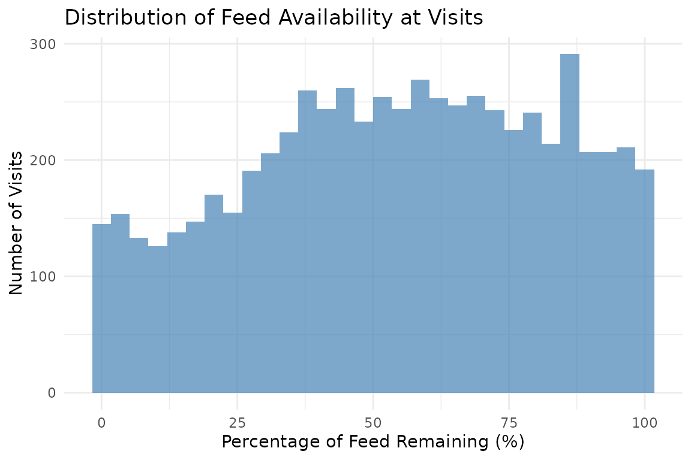
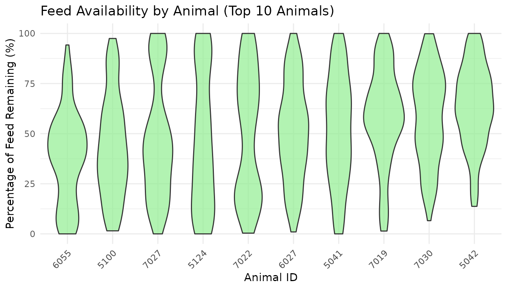

7. Feed Availability Analysis
Source:vignettes/feed_availability_analysis.Rmd
feed_availability_analysis.Rmd1. Set Your Global Variables First
Before analyzing feed availability patterns, configure global variables to match your data structure:
# Configure global variables for your data structure
set_global_cols(
# Time zone
tz = "America/Vancouver",
# Column names in your data files
id_col = "cow",
trans_col = "transponder",
start_col = "start",
end_col = "end",
bin_col = "bin",
dur_col = "duration",
intake_col = "intake",
start_weight_col = "start_weight",
end_weight_col = "end_weight",
# Bin settings
bins_feed = 1:30,
bins_wat = 1:5,
bin_offset = 100
)2. Introduction to Feed Availability Analysis
Understanding when feed is added to bins and how much feed is available when animals visit each bin can help researchers and farmers better track feed management on daily basis, and identify animals that may be disadvantaged (e.g., those who consistently eat the “left-over” feed).
- Monitor feed addition: Identify when bins are refilled throughout the day, the frequency of feed additions, and the amount of feed added to each bin.
- Identify disadvantaged animals: Animals visiting when bins are nearly empty may be disadvantaged
3. Prerequisites
This tutorial assumes completion of previous data processing steps in Tutorial 1: Data Cleaning.
Your data must include start_weight and end_weight columns representing the bin weight at the beginning and end of each visit.
4. Data Preparation
# Load cleaned example data
data(clean_feed)
# If you're using your own data from previous tutorials, use this instead:
# clean_feed <- your_cleaned_feed_data # From your cleaning results
# Quick peek at our data structure
head(clean_feed[[1]], 3) # First day, first 3 rows
#> # A tibble: 3 × 11
#> transponder cow bin start end duration
#> <int> <int> <dbl> <dttm> <dttm> <dbl>
#> 1 12448407 6020 1 2020-10-31 00:26:12 2020-10-31 00:27:36 84
#> 2 11954014 4044 1 2020-10-31 01:17:43 2020-10-31 01:22:13 270
#> 3 11954042 4072 1 2020-10-31 01:37:30 2020-10-31 01:37:52 22
#> # ℹ 5 more variables: start_weight <dbl>, end_weight <dbl>, intake <dbl>,
#> # date <date>, rate <dbl>
cat("\nTotal days of feed data:", length(clean_feed), "\n")
#>
#> Total days of feed data: 25. Detecting Feed Addition Events
Feed additions are detected by identifying significant weight increases between consecutive visits at the same bin. When the bin weight at the start of a visit is much higher than the bin weight at the end of the previous visit, feed was probably added in between.
Understanding Feed Addition Detection
The detect_feed_additions() function gives you 2 options
to processes feed data:
Option 1: Within-bin aggregation (always applied)
When a farmer adds feed to the same bin multiple times in quick
succession (within max_bin_time_gap seconds), those
additions are combined into a single feed event for that bin.
For example, a farmer might add feed to Bin 1 three times in the same morning:
| Time | Bin | Amount |
|---|---|---|
| 6:00am | Bin 1 | 10 kg |
| 6:01am | Bin 1 | 20 kg |
| 6:03am | Bin 1 | 15 kg |
Instead of recording three separate entries, the function combines them into one: 45 kg added to Bin 1 at 6:00am.
Example code below:
# Detect feed additions for each bin separately
feed_additions <- detect_feed_additions(
data = clean_feed,
min_weight_increase = 5, # Minimum kg increase to count as addition
max_bin_time_gap = 3600, # Group rapid additions within 1 hour
aggregate_all_bin = FALSE # Keep per-bin additions (required for availability calc)
)
# Examine the first day's feed additions
head(feed_additions[[1]])
#> date time weight_increase bin_weight_after_fill bin
#> 1 2020-10-31 2020-10-31 06:04:40 34.6 40.0 21
#> 2 2020-10-31 2020-10-31 06:04:51 27.5 41.6 15
#> 3 2020-10-31 2020-10-31 06:04:53 31.5 35.0 2
#> 4 2020-10-31 2020-10-31 06:05:00 30.4 35.1 7
#> 5 2020-10-31 2020-10-31 06:05:16 33.3 40.2 3
#> 6 2020-10-31 2020-10-31 06:05:20 49.1 54.0 23Each feed addition event contains:
-
date: Date of the feed addition -
bin: Bin identifier where feed was added -
time: Timestamp of the first detected addition in this event -
weight_increase: Total amount of feed added (kg) -
bin_weight_after_fill: Total bin weight after the final addition (kg)
Option 2: Across-bin aggregation (optional)
When aggregate_all_bin = TRUE, feed additions across
different bins within a short time window are grouped into a
single farm-level feeding event. This captures the full picture of a
feeding session — when it started, when it ended, and the average amount
added per bin.
For example, during a morning feeding session, a farmer might add:
| Time | Bin | Amount |
|---|---|---|
| 6:00am | Bin 1 | 50 kg |
| 6:05am | Bin 2 | 60 kg |
| 6:10am | Bin 3 | 45 kg |
Instead of three separate bin-level records, the function returns one event: 155 kg added across all bins at 6:00am.
Use this option when you care about total feed added per session, rather than the breakdown per bin.
Example code below:
# Detect multi-bin feed events
feed_events <- detect_feed_additions(
data = clean_feed,
min_weight_increase = 5,
max_bin_time_gap = 3600,
min_bins_for_group = 3, # At least 3 bins filled to count as event
aggregate_all_bin = TRUE # Aggregate across bins
)
# Examine the aggregated events
cat("Aggregated feed events on first day:\n")
#> Aggregated feed events on first day:
head(feed_events[[1]])
#> date event_id event_start event_end bins_filled
#> 1 2020-10-31 1 2020-10-31 06:04:40 2020-10-31 06:26:34 30
#> 2 2020-10-31 3 2020-10-31 15:46:59 2020-10-31 16:13:30 29
#> avg_weight_increase min_weight_increase max_weight_increase
#> 1 35.48333 11.6 85.5
#> 2 54.24828 18.1 87.7
cat("\nMulti-bin feed events per day:\n")
#>
#> Multi-bin feed events per day:
sapply(feed_events, nrow)
#> 2020-10-31 2020-11-01
#> 2 2Aggregated events contain:
-
event_id: Unique identifier for the feed event on that day -
event_start: When farmers started adding feed to the bins -
event_end: When farmers finished adding feed to the bins -
bins_filled: Number of bins refilled in the event -
avg_weight_increase: Average feed added across bins (kg)
6. Calculating Feed Availability at Each Visit
Once we have per-bin feed additions, we can calculate the percentage of feed remaining when each animal visits. This helps identify animals that consistently visit when bins are nearly empty.
Calculate Feed Availability
# Calculate feed availability for each visit
availability <- calculate_feed_availability(
visit_data = clean_feed,
feed_addition_data = feed_additions # Must use aggregate_all_bin = FALSE
)
# The function returns a list with two elements:
# 1. visits - visit-level data with feed percentages
# 2. daily_summary - summary statistics per animal per dayVisit-Level Results
# Examine visit-level data from first day (all columns in a scrollable table)
visits_with_availability <- availability$visits[[1]]
tbl <- tail(visits_with_availability[, c("cow", "bin", "start", "start_weight",
"feed_addition_time", "bin_weight_after_fill",
"pct_feed_remaining")])
html_table <- knitr::kable(tbl, format = "html")
cat('<div style="overflow-x: auto;">', html_table, '</div>')| cow | bin | start | start_weight | feed_addition_time | bin_weight_after_fill | pct_feed_remaining |
|---|---|---|---|---|---|---|
| 6005 | 30 | 2020-10-31 22:29:25 | 22.4 | 2020-10-31 15:54:27 | 58.3 | 38.42196 |
| 6005 | 30 | 2020-10-31 22:58:00 | 22.1 | 2020-10-31 15:54:27 | 58.3 | 37.90738 |
| 6069 | 30 | 2020-10-31 22:59:30 | 21.8 | 2020-10-31 15:54:27 | 58.3 | 37.39280 |
| 6028 | 30 | 2020-10-31 23:00:29 | 21.6 | 2020-10-31 15:54:27 | 58.3 | 37.04974 |
| 6069 | 30 | 2020-10-31 23:14:07 | 21.2 | 2020-10-31 15:54:27 | 58.3 | 36.36364 |
| 6069 | 30 | 2020-10-31 23:17:52 | 20.5 | 2020-10-31 15:54:27 | 58.3 | 35.16295 |
New columns added to visit data:
-
feed_addition_time: When feed was last added to this bin -
feed_added_weight: Weight of feed added to this bin (kg) -
bin_weight_after_fill: Bin weight after feed was added (kg). Note this is likely to be different from thefeed_added_weightbecause it includes any residual feed that was already in the bin. -
pct_feed_remaining: Percentage of feed remaining (start_weight/bin_weight_after_fill) when visit started
Important: For multi-day data, visits occurring
early in a day (before any feed addition on that day) are automatically
matched to feed additions from the previous calendar day. This works
even if days are out of order or have gaps in the data. The function
uses actual dates (from the date column or list names) to
determine which day is “previous”, not list position.
Daily Summary Statistics
# Examine daily summary from first day
daily_summary <- availability$daily_summary[[1]]
head(daily_summary)
#> date cow mean_pct_feed_remaining median_pct_feed_remaining
#> 1 2020-10-31 2074 59.70264 53.96419
#> 2 2020-10-31 3150 62.22631 67.39741
#> 3 2020-10-31 4001 68.03947 73.08782
#> 4 2020-10-31 4044 56.13479 52.74473
#> 5 2020-10-31 4070 44.92761 37.19187
#> 6 2020-10-31 4072 48.04099 51.27479
#> sd_pct_feed_remaining total_visits_analyzed
#> 1 28.59389 45
#> 2 26.29525 52
#> 3 18.72861 49
#> 4 24.65588 58
#> 5 29.56021 54
#> 6 26.01743 71The daily summary provides per animal:
-
mean_pct_feed_remaining: Average percentage of feed remaining across visits -
median_pct_feed_remaining: Median percentage of feed remaining across visits -
sd_pct_feed_remaining: Standard deviation of percentage of feed remaining across visits -
total_visits_analyzed: Number of visits with valid feed data
7. Analyzing Feed Availability Patterns
Identify Potentially Disadvantaged Animals
Animals consistently visiting when little feed remains may be competitively disadvantaged. We calculated statistics using visit-level data to get accurate measures across all visits recorded in multiple days.Using median is recommended because the distribution of feed availability is often skewed, making median a more robust measure of central tendency than mean.
# Combine all visits across days
all_visits <- do.call(rbind, availability$visits)
# Filter to visits with valid feed percentage
valid_visits <- all_visits |>
dplyr::filter(!is.na(pct_feed_remaining))
# Calculate overall statistics per animal using visit-level data
low_availability <- valid_visits |>
dplyr::group_by(cow) |>
dplyr::summarise(
overall_mean_pct = mean(pct_feed_remaining, na.rm = TRUE),
overall_median_pct = median(pct_feed_remaining, na.rm = TRUE),
total_visits = dplyr::n(),
.groups = "drop"
) |>
dplyr::arrange(overall_median_pct)
# Animals visiting when little feed remains (lowest median feed availability)
head(low_availability, 5)
#> # A tibble: 5 × 4
#> cow overall_mean_pct overall_median_pct total_visits
#> <int> <dbl> <dbl> <int>
#> 1 6042 41.1 27.1 97
#> 2 6121 47.4 39.9 112
#> 3 5067 45.3 40.0 149
#> 4 6055 38.6 40.1 201
#> 5 7018 44.0 40.3 155
# Animals visiting when most feed remains (highest median feed availability)
tail(low_availability, 5)
#> # A tibble: 5 × 4
#> cow overall_mean_pct overall_median_pct total_visits
#> <int> <dbl> <dbl> <int>
#> 1 6033 62.9 64.1 146
#> 2 6129 58.2 64.5 77
#> 3 5123 56.9 67.9 148
#> 4 7043 62.8 68.0 107
#> 5 4001 66.4 71.3 90Visualize Feed Availability Distribution
# Distribution of feed availability across all visits
all_visits <- do.call(rbind, availability$visits)
# Filter to visits with valid feed percentage
valid_visits <- all_visits |>
dplyr::filter(!is.na(pct_feed_remaining))
# Create histogram
ggplot(valid_visits, aes(x = pct_feed_remaining)) +
geom_histogram(bins = 30, fill = "steelblue", alpha = 0.7) +
labs(
title = "Distribution of Feed Availability at Visits",
x = "Percentage of Feed Remaining (%)",
y = "Number of Visits"
) +
theme_minimal()
Compare Feed Availability by Animal (Top 10)
# Violin plot of feed availability by animal (top 5 and bottom 5 by median pct_feed_remaining)
# Calculate median feed availability per animal
animal_medians <- valid_visits |>
dplyr::group_by(cow) |>
dplyr::summarise(
median_pct = median(pct_feed_remaining, na.rm = TRUE),
.groups = "drop"
) |>
dplyr::arrange(median_pct)
# Top 5 animals with highest median feed availability
top_animals <- animal_medians |>
tail(5) |>
dplyr::pull(cow)
# Bottom 5 animals with lowest median feed availability
bottom_animals <- animal_medians |>
head(5) |>
dplyr::pull(cow)
all_animals <- c(top_animals, bottom_animals)
valid_visits |>
dplyr::filter(cow %in% all_animals) |>
ggplot(aes(x = reorder(cow, pct_feed_remaining, FUN = median),
y = pct_feed_remaining)) +
geom_violin(fill = "olivedrab3", alpha = 0.8) +
geom_boxplot(width = 0.1, fill = "white", alpha = 1) +
labs(
title = "Feed Availability by Animal (Top 5 and Bottom 5 by Median)",
x = "Animal ID",
y = "Percentage of Feed Remaining (%)"
) +
theme_minimal() +
theme(axis.text.x = element_text(angle = 45, hjust = 1))
8. Summary
This tutorial demonstrated feed availability analysis:
- Feed addition detection: Identified when bins are refilled based on weight increases
- Per-visit availability: Calculated the percentage of feed remaining at each visit
- Daily summaries: Aggregated feed availability statistics per animal per day
- Pattern identification: Found animals that may be competitively disadvantaged
9. Code Cheatsheet
#' Copy and modify these code blocks for your own analysis!
# ---- SETUP: Global Variables (REQUIRED FIRST!) ----
library(moo4feed)
library(ggplot2)
library(dplyr)
# Set up your column names and timezone (modify these!)
set_global_cols(
# Time zone
tz = "America/Vancouver",
# Column names in your data files
id_col = "cow",
trans_col = "transponder",
start_col = "start",
end_col = "end",
bin_col = "bin",
dur_col = "duration",
intake_col = "intake",
start_weight_col = "start_weight",
end_weight_col = "end_weight",
# Bin settings
bins_feed = 1:30,
bins_wat = 1:5,
bin_offset = 100
)
# ---- STEP 1: Load Your Data ----
# Use the example data:
data(clean_feed)
# Or use your own cleaned data from Tutorial 1:
# clean_feed <- your_cleaned_feed_data
# ---- STEP 2: Detect Feed Additions (Per-Bin) ----
# This is required for calculating feed availability
feed_additions <- detect_feed_additions(
data = clean_feed,
min_weight_increase = 5, # Minimum kg to count as addition
max_bin_time_gap = 3600, # Group additions within 1 hour (seconds)
aggregate_all_bin = FALSE # Keep per-bin (REQUIRED for availability)
)
# Check results
head(feed_additions[[1]])
# ---- STEP 3: Detect Aggregated Feed Events (Optional) ----
# Use this to identify coordinated multi-bin feeding events
feed_events <- detect_feed_additions(
data = clean_feed,
min_weight_increase = 5,
max_bin_time_gap = 3600,
min_bins_for_group = 3, # At least 3 bins to count as event
aggregate_all_bin = TRUE # Aggregate across bins
)
# Check results
head(feed_events[[1]])
# ---- STEP 4: Calculate Feed Availability ----
availability <- calculate_feed_availability(
visit_data = clean_feed,
feed_addition_data = feed_additions # From Step 2 (aggregate_all_bin = FALSE)
)
# Access visit-level data with feed percentages
visits_with_pct <- availability$visits
# Access daily summaries per animal
daily_summaries <- availability$daily_summary
# View first day results
head(visits_with_pct[[1]])
print(daily_summaries[[1]])
# ---- STEP 5: Analyze Patterns ----
# Combine all visits across days
all_visits <- do.call(rbind, availability$visits)
# Filter to valid visits
valid_visits <- all_visits |>
dplyr::filter(!is.na(pct_feed_remaining))
# Find animals with lowest feed availability using visit-level data
low_availability <- valid_visits |>
dplyr::group_by(cow) |>
dplyr::summarise(
overall_mean_pct = mean(pct_feed_remaining, na.rm = TRUE),
overall_median_pct = median(pct_feed_remaining, na.rm = TRUE),
total_visits = dplyr::n(),
.groups = "drop"
) |>
dplyr::arrange(overall_median_pct)
print(low_availability)
# ---- STEP 6: Visualize Results ----
# Distribution of feed availability
# Histogram of feed availability
ggplot(valid_visits, aes(x = pct_feed_remaining)) +
geom_histogram(bins = 30, fill = "steelblue", alpha = 0.7) +
labs(
title = "Distribution of Feed Availability at Visits",
x = "Percentage of Feed Remaining (%)",
y = "Number of Visits"
) +
theme_minimal()
# Violin plot of feed availability by animal (top 5 and bottom 5 by median pct_feed_remaining)
# Calculate median feed availability per animal
animal_medians <- valid_visits |>
dplyr::group_by(cow) |>
dplyr::summarise(
median_pct = median(pct_feed_remaining, na.rm = TRUE),
.groups = "drop"
) |>
dplyr::arrange(median_pct)
# Top 5 animals with highest median feed availability
top_animals <- animal_medians |>
tail(5) |>
dplyr::pull(cow)
# Bottom 5 animals with lowest median feed availability
bottom_animals <- animal_medians |>
head(5) |>
dplyr::pull(cow)
all_animals <- c(top_animals, bottom_animals)
valid_visits |>
dplyr::filter(cow %in% all_animals) |>
ggplot(aes(x = reorder(cow, pct_feed_remaining, FUN = median),
y = pct_feed_remaining)) +
geom_violin(fill = "olivedrab3", alpha = 0.8) +
geom_boxplot(width = 0.1, fill = "white", alpha = 1) +
labs(
title = "Feed Availability by Animal (Top 5 and Bottom 5 by Median)",
x = "Animal ID",
y = "Percentage of Feed Remaining (%)"
) +
theme_minimal() +
theme(axis.text.x = element_text(angle = 45, hjust = 1))